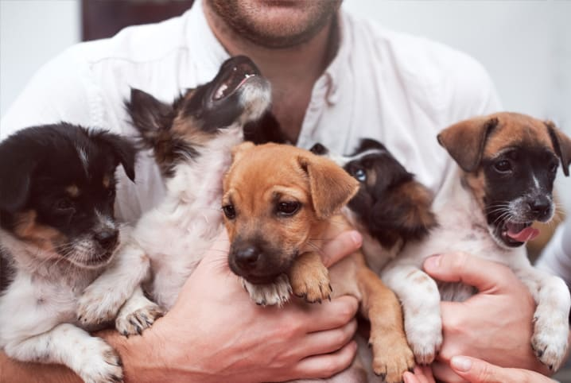

Quem Somos ?
Somos uma organização sem fins lucrativos dedicada a promover a adoção responsável ,e a estimular o cuidado com nossos companheiros de 4 patas.
LEMBRE-SE:A solidariedade é o vínculo que une a humanidade. É o ato de reconhecer que somos todos parte de uma mesma família.
Contato
Email: melhoramigo@gmail.com
Telefone: (32) 9982-9568